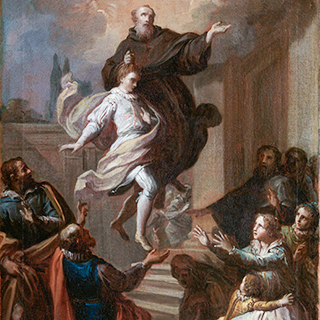

Nombre:
José (Masculino)
Celebran:
Los José suelen celebrar el 19-mar:
San José
Nació:
17 de junio de 1603 en Cupertino,
en el actual Italia
Falleció:
18 de septiembre de 1663 en Osimo,
en el actual Italia
Proceso:
Beatificadoel 1753 por Benedicto
XIV
Canonizado:
El 16 de julio de 1767 por Clemente
XIII
Celebración:
18 de septiembre
Religioso:
De la Orden de Frailes Menores